Municipalidad Provincial de Ica · Gerencia de Administración
MUNI SHEETS — SISTEMA DE REPORTE DE PLANILLAS
Manual de Usuario
Roles Consultor y Editor
Guía completa y detallada para el uso diario del sistema: consultar las 13 planillas,
buscar trabajadores, emitir boletas y reportes (Consultor), y además registrar, editar
y actualizar datos de forma masiva (Editor). Todas las capturas provienen del sistema real.
AplicaciónMuni Sheets
Dirigido aPersonal con rol Consultor o Editor
Versión1.2 — Julio 2026
Muni Sheets · MPIUso interno
Contenido
Índice del manual
Introducción
1 · ¿Qué es Muni Sheets y qué puede hacer cada rol?pág. 3
2 · Ingresar al sistema y recuperar tu contraseñapág. 4
Parte A — Funciones de consulta consultor y editor
3 · El Panel de Planillas (pantalla de inicio)pág. 6
4 · Abrir una planilla y navegar por sus páginaspág. 7
5 · Buscar y ordenar dentro de una planillapág. 8
6 · El selector de mes: mes actual e históricopág. 9
7 · Búsqueda global: encontrar a cualquier trabajadorpág. 10
8 · Descargar la boleta de pago en PDFpág. 11
9 · Exportar a Excel y Reporte consolidadopág. 11
10 · Mi perfil: datos personales y contraseñapág. 12
Parte B — Funciones de edición solo editor
11 · La planilla vista por el editor (barra de herramientas)pág. 13
12 · Nuevo registro: asistente de 3 pasospág. 14
13 · Editar un registro (totales automáticos)pág. 16
14 · Corregir datos fijos (identidad del trabajador)pág. 17
15 · Eliminar un registropág. 18
16 · Actualizar una columna con Excel (carga masiva)pág. 19
17 · Recalcular totalespág. 20
18 · Generar el mes siguientepág. 21
Cierre
19 · Límites de cada rol y preguntas frecuentespág. 22
Muni Sheets · MPIManual de Usuario · pág. 2
Introducción
1¿Qué es Muni Sheets y qué puede hacer cada rol?
Muni Sheets es el sistema web de la Municipalidad Provincial de Ica que centraliza
las 13 planillas de pago (Obreros, Empleados, CAS, Pensionistas y Autoridades) en una
sola plataforma, con cálculo automático de totales, histórico mensual y control de acceso por roles.
Este manual cubre los dos roles operativos:
👁 CONSULTOR — solo lectura✎ EDITOR — lectura + edición de datos
¿Qué puede hacer cada uno?
Acción
Consultor
Editor
Ver el Panel de Planillas y las 13 planillas
✔
✔
Buscar dentro de una planilla y en las 13 a la vez (búsqueda global)
✔
✔
Consultar meses anteriores (histórico)
✔
✔
Descargar boletas de pago en PDF
✔
✔
Exportar planillas a Excel · Reporte consolidado
✔
✔
Editar sus propios datos de perfil y contraseña
✔
✔
Crear nuevos registros (asistente de 3 pasos)
✕
✔
Editar y eliminar registros del mes abierto
✕
✔
Actualizar una columna con Excel (carga masiva)
✕
✔
Recalcular totales · Generar el mes siguiente
✕
✔
Gestionar usuarios · Ver auditoría
✕
✕
Importante: la seguridad se aplica en la base de datos, no solo en la pantalla.
Si tu rol no permite una acción, el botón no aparece y — aunque se intentara por otra vía — el
sistema la rechazaría. La gestión de usuarios y la auditoría son exclusivas del administrador.
Consejo: si eres editor, todo lo de la Parte A también te corresponde:
el editor tiene todas las capacidades del consultor más las de edición de la Parte B.
Muni Sheets · MPIManual de Usuario · pág. 3
Introducción
2Ingresar al sistema (iniciar sesión) (1/2)
Abre el navegador (Chrome, Edge o Firefox) y escribe la dirección del sistema que te
proporcionó el área de administración.
Aparece la pantalla de acceso de Muni Sheets. Escribe tu correo electrónico
institucional (el que registró el administrador al crear tu cuenta).
Escribe tu contraseña. Los caracteres se ocultan por seguridad.
Pulsa Ingresar. Si los datos son correctos entrarás directamente al
Panel de Planillas.
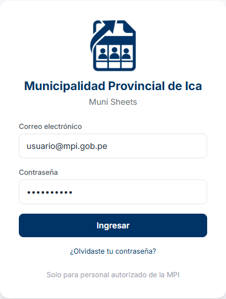
Pantalla de acceso: correo + contraseña.
Problemas frecuentes al ingresar
«Invalid login credentials»: el correo o la contraseña no coinciden. Revisa
mayúsculas y espacios al inicio o final.
Olvidaste tu contraseña: usa el enlace ¿Olvidaste tu contraseña? de la
pantalla de acceso para recibir un correo y crear una nueva (ver página siguiente).
Cuenta desactivada: si el administrador desactivó tu cuenta, no podrás ingresar
aunque la contraseña sea correcta.
Cerrar sesión: usa el ícono rojo de salida en la esquina superior derecha
cuando termines, especialmente en computadoras compartidas.
Muni Sheets · MPIManual de Usuario · pág. 4
Introducción
2¿Olvidaste tu contraseña? Restablécela por correo (2/2)
No necesitas pedirle una contraseña nueva al administrador: el sistema puede enviarte un
enlace de recuperación al correo de tu cuenta para que tú mismo definas una nueva.
En la pantalla de acceso, pulsa el enlace ¿Olvidaste tu contraseña?
(debajo del botón Ingresar).
Escribe el correo de tu cuenta y pulsa Enviar enlace de recuperación.
Abre tu bandeja de correo y busca el mensaje de recuperación. Puede tardar uno o dos
minutos; revisa también la carpeta de spam.
Haz clic en el enlace del correo. Se abrirá la pantalla Restablecer contraseña
con tu cuenta ya identificada.
Escribe tu nueva contraseña dos veces (mínimo 6 caracteres y distinta de la
anterior) y pulsa Guardar nueva contraseña.
Listo: entrarás directamente al Panel de Planillas con tu contraseña nueva.
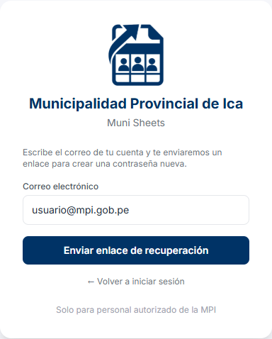
Paso 2: solicita el enlace con el correo de tu cuenta.
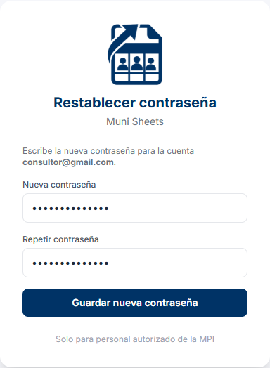
Paso 5: define tu nueva contraseña.
El enlace es de un solo uso y caduca: si lo abres y aparece
«El enlace no es válido o ya expiró», vuelve a la pantalla de acceso y solicita uno nuevo.
¿No te llega el correo? Verifica que escribiste el correo con el que el
administrador creó tu cuenta. Si aun así no llega, el administrador siempre puede asignarte una
contraseña nueva desde la pantalla de Usuarios.
Muni Sheets · MPIManual de Usuario · pág. 5
Parte A · Funciones de consulta consultor y editor
3El Panel de Planillas (pantalla de inicio)
Al ingresar verás el Panel de Planillas: un resumen general del mes seleccionado.
Panel de Planillas con el mes de Junio 2026 seleccionado (sesión de consultor).
Qué encuentras en esta pantalla
Barra superior: tu nombre y tu rol (etiqueta gris «consultor» o dorada «editor»),
y el botón para cerrar sesión.
Menú lateral izquierdo: Inicio, Búsqueda global, Mi perfil y las 13 planillas
agrupadas en 5 categorías (Obreros, Empleados, CAS, Pensionistas, Autoridades).
Cada grupo se despliega o contrae al hacer clic.
Indicadores: número de planillas, total de trabajadores y total a pagar del mes.
Gráfico de barras: total líquido por grupo laboral.
Resumen por planilla: tabla con trabajadores, ingresos, descuentos y líquido de
cada una de las 13 planillas. El nombre de cada planilla es un enlace directo.
Selector «Mes a consultar»: cambia todo el panel a un mes anterior (ver sección 6).
Botón «Reporte consolidado»: descarga un Excel con todas las planillas del mes (sección 9).
Vuelve al inicio en cualquier momento con la opción Inicio
del menú lateral.
Muni Sheets · MPIManual de Usuario · pág. 6
Parte A · Funciones de consulta consultor y editor
4Abrir una planilla y navegar por sus páginas
En el menú lateral, haz clic en el grupo (por ejemplo Empleados)
para desplegar sus planillas.
Haz clic en la planilla deseada (por ejemplo Empleados Permanentes).
Se abre la tabla con los trabajadores del mes más reciente. Verás el número total
de registros junto a la caja de búsqueda.
Desplázate horizontalmente para ver todas las columnas (ingresos, descuentos y
totales) y verticalmente para recorrer las filas.
Si la planilla tiene más de 50 trabajadores, usa la paginación del pie de la
tabla: botones «Anterior», «Siguiente» y números de página.
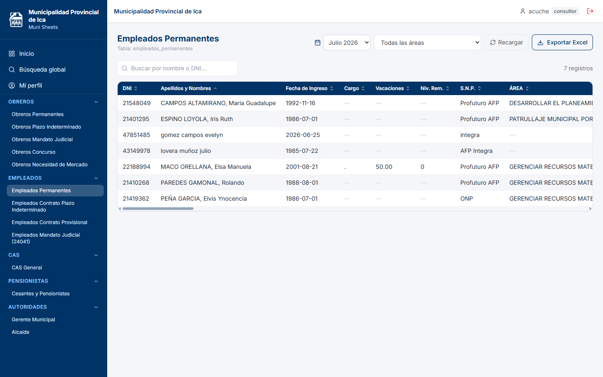
Planilla «Empleados Permanentes» vista por un consultor: sin botones de edición.
Vista del consultor: como se ve en la captura, el consultor dispone de
Recargar y Exportar Excel junto al selector de mes.
No aparecen botones de edición: esos son exclusivos del editor (Parte B).
Recargar: si otra persona está actualizando la planilla en ese momento,
los cambios aparecen solos (tiempo real). El botón Recargar fuerza una
actualización inmediata si lo necesitas.
Muni Sheets · MPIManual de Usuario · pág. 7
Parte A · Funciones de consulta consultor y editor
5Buscar y ordenar dentro de una planilla
Buscar un trabajador
Dentro de la planilla, ubica la caja «Buscar por nombre o DNI…»
en la parte superior de la tabla.
Escribe parte del apellido o nombre (no importan mayúsculas/minúsculas)
o el DNI exacto.
La tabla se filtra automáticamente mientras escribes y el contador de registros
muestra cuántos coinciden.
Borra el texto para volver a ver la planilla completa.
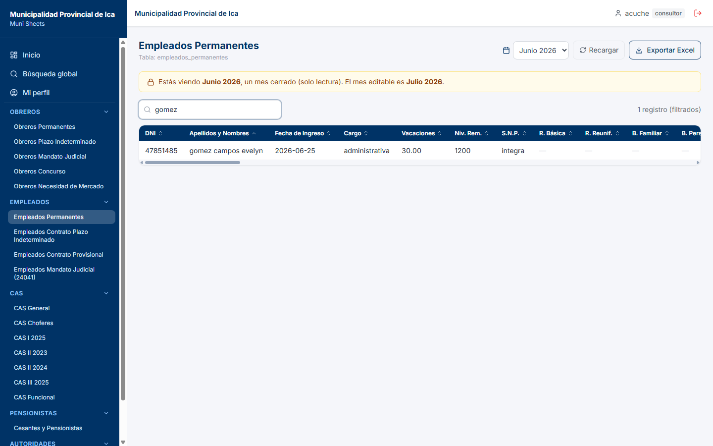
Búsqueda por «gomez»: la tabla muestra solo las coincidencias.
Ordenar por una columna
Haz clic en el encabezado de cualquier columna (DNI, Apellidos, R. Básica…)
para ordenar de forma ascendente.
Haz clic de nuevo para invertir a descendente. Las flechas del encabezado
indican el orden activo.
Filtrar por área
En las planillas divididas por áreas (actividades), un selector junto a la búsqueda
permite ver solo los trabajadores de un área. Elige Todas las áreas para
quitar el filtro.
Búsqueda por DNI: con solo dígitos el sistema busca el DNI exacto
además del nombre — útil cuando conoces el documento del trabajador.
Muni Sheets · MPIManual de Usuario · pág. 8
Parte A · Funciones de consulta consultor y editor
6El selector de mes: mes actual e histórico
Cada planilla guarda un histórico mensual: los datos de cada mes quedan archivados y
nunca se sobrescriben. El sistema distingue dos tipos de mes:
Mes abierto (editable): el más reciente de la planilla. Es el único donde el
editor puede hacer cambios.
Meses cerrados (solo lectura): todos los anteriores. Se pueden consultar,
exportar e imprimir, pero nadie puede modificarlos.
Dentro de la planilla, abre el selector de mes (junto al botón Recargar).
Elige el mes que quieres consultar (por ejemplo Junio 2026).
La tabla carga los datos de ese mes. Si es un mes cerrado, aparece un
aviso ámbar indicando que estás en solo lectura.
Para volver al mes de trabajo, selecciona nuevamente el mes más reciente.
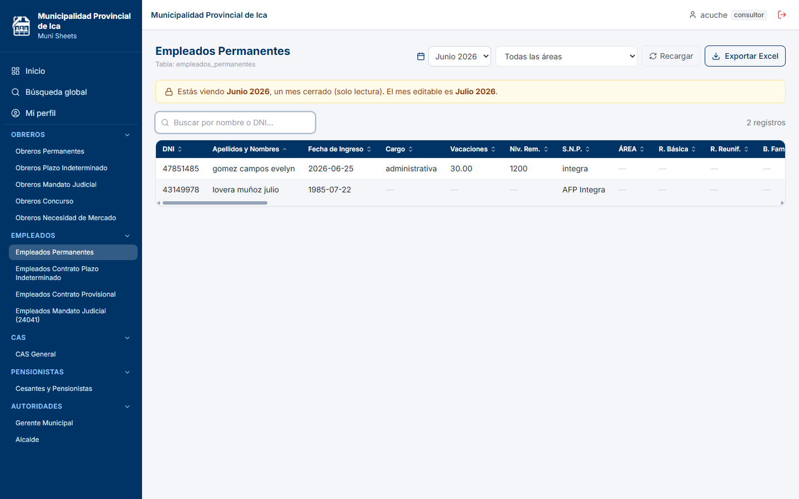
Consultando Junio 2026 (mes cerrado): el aviso indica que es solo lectura y cuál es el mes editable.
Para el consultor no cambia nada — su acceso siempre es de lectura.
El aviso es especialmente relevante para el editor: en meses cerrados sus botones de edición
desaparecen.
Muni Sheets · MPIManual de Usuario · pág. 9
Parte A · Funciones de consulta consultor y editor
7Búsqueda global: encontrar a cualquier trabajador
¿No sabes en qué planilla está una persona? La búsqueda global consulta las
13 planillas a la vez.
En el menú lateral entra a Búsqueda global.
Elige el mes a consultar en el selector de la izquierda.
Escribe el DNI (búsqueda exacta) o parte del nombre (búsqueda parcial).
Pulsa Buscar o presiona Enter.
Los resultados aparecen agrupados por planilla: cada bloque azul indica la
planilla donde figura la persona, con su DNI, nombre y líquido del mes.
Desde cada resultado puedes: pulsar Imprimir para descargar su
boleta PDF (sección 8) o Ver planilla completa → para abrir esa planilla.
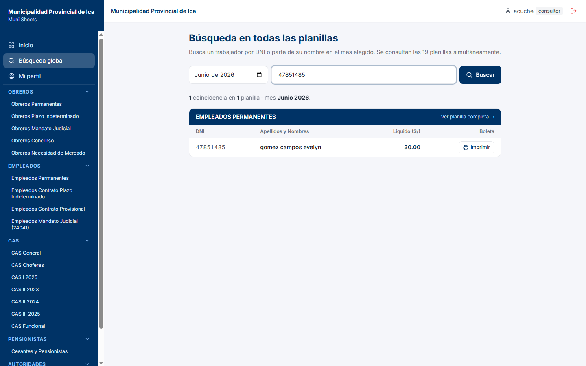
Búsqueda del DNI 47851485 en Junio 2026: 1 coincidencia en «Empleados Permanentes»,
con botón Imprimir para su boleta.
Sin resultados: verifica que el mes elegido sea uno donde el trabajador
estuvo registrado y que el DNI no tenga errores de tipeo.
Muni Sheets · MPIManual de Usuario · pág. 10
Parte A · Funciones de consulta consultor y editor
8Descargar la boleta de pago en PDF
La boleta individual detalla los ingresos, descuentos y líquido de un trabajador en el mes elegido.
Ubica al trabajador de una de estas dos formas: abre su planilla (secciones 4–5)
o encuéntralo con la búsqueda global (sección 7).
Pulsa el botón Imprimir de su fila (ícono de impresora).
El PDF se descarga automáticamente con el detalle del mes que estás viendo:
datos del trabajador, columnas de ingresos, columnas de descuentos y los tres totales.
Ábrelo con cualquier lector de PDF para imprimirlo o enviarlo.
El PDF respeta el mes seleccionado: si estás consultando Junio 2026,
la boleta sale con los montos de Junio 2026.
9Exportar a Excel y Reporte consolidado
Exportar una planilla
Abre la planilla y el mes que necesitas y pulsa Exportar Excel.
Si la planilla tiene cuadro presupuestal, una ventana pide un único Nº Siaf
para la planilla — solo acepta números, puede quedar en blanco — y se aplica
automáticamente a todas sus áreas. Pulsa Descargar.
Se descarga un .xlsx con formato institucional (membrete, título oficial y mes):
los trabajadores van agrupados por área con subtotales, y cada área lleva su
resumen por concepto, el aporte a ESSALUD (9%), la comprobación y su
cuadro presupuestal. Al final se agrega la hoja «Resumen por áreas».
Al terminar todas las áreas, la hoja cierra con el TOTAL GENERAL: la suma de
todas las columnas de la planilla (Remuneraciones y Descuentos) con su
resumen y comprobación generales, y al pie las tres firmas de
Administración, Recursos Humanos y Remuneraciones, listas para imprimir.
Si cambia una jefatura: los nombres y cargos de las tres firmas
se editan en un solo lugar del sistema; pídeselo al área de sistemas y saldrán actualizados
en todas las planillas.
Reporte consolidado (todas las planillas)
Ve a Inicio (Panel de Planillas), elige el mes y pulsa
Reporte consolidado (esquina superior derecha).
Ingresa el Nº Siaf de cada planilla — uno por planilla; se aplica a todas sus
áreas — y pulsa Descargar.
Se descarga un Excel de varias hojas: una por planilla con sus trabajadores del mes,
con el mismo formato institucional de la exportación individual.
Ambas descargas están disponibles para los dos roles — exportar no
modifica ningún dato.
Muni Sheets · MPIManual de Usuario · pág. 11
Parte A · Funciones de consulta consultor y editor
10Mi perfil: datos personales y contraseña
Todo usuario puede administrar sus propios datos desde Mi perfil en el menú lateral
(o haciendo clic en su nombre en la barra superior).
Editar tus datos
Entra a Mi perfil.
Modifica tu Nombre y/o tu Celular. Tu correo y tu rol aparecen
en solo lectura: solo el administrador puede cambiarlos.
Guarda los cambios. Tu nombre actualizado se reflejará en la barra superior.
Cambiar tu contraseña
En la misma pantalla, ubica la sección de contraseña.
Escribe la nueva contraseña y su confirmación.
Pulsa el botón de actualizar. A partir de ese momento ingresarás con la nueva clave.
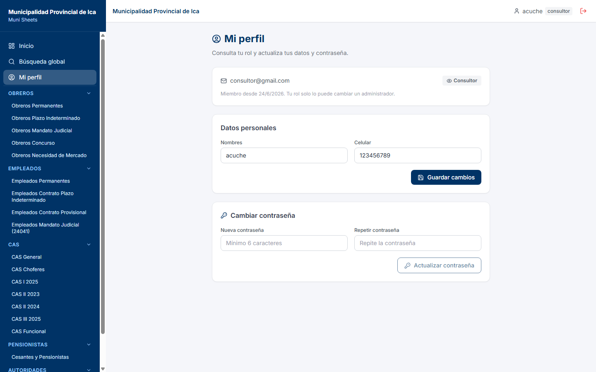
Mi perfil: nombre y celular editables; correo y rol en solo lectura; cambio de contraseña.
Recomendación de seguridad: usa una contraseña que no utilices en otros
servicios y no la compartas. Si sospechas que alguien la conoce, cámbiala de inmediato.
Muni Sheets · MPIManual de Usuario · pág. 12
Parte B · Funciones de edición solo editor
11La planilla vista por el editor (barra de herramientas)
Cuando un editor abre una planilla en su mes abierto, aparecen las herramientas
de edición que el consultor no ve:
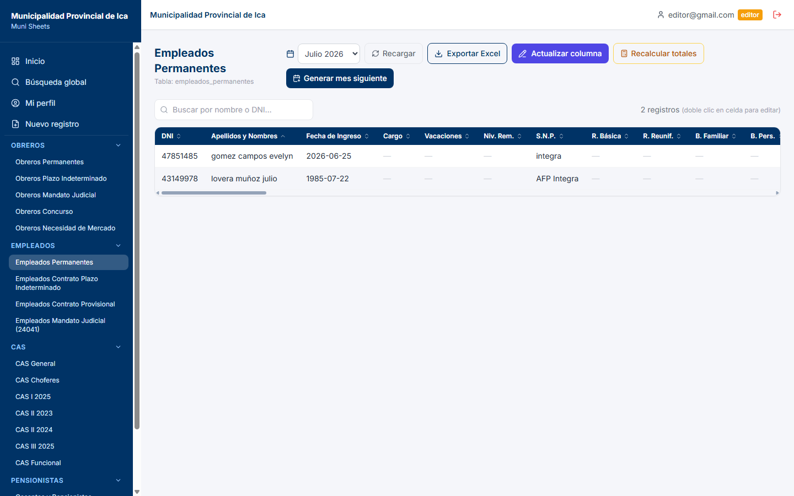
La misma planilla con sesión de editor: botones adicionales en la barra y acciones por fila.
Control
Para qué sirve
Sección
Actualizar columna
Carga masiva de una columna (ej. un descuento) desde un archivo Excel, emparejando por DNI.
16
Recalcular totales
Recalcula Total Ingreso, Total Descuentos y Total Líquido de todos los registros del mes.
17
Generar mes siguiente
Crea la planilla del mes próximo copiando la identidad de los trabajadores.
18
Editar (por fila)
Abre el formulario del trabajador para completar o corregir montos.
13
Eliminar (por fila)
Retira al trabajador de la planilla del mes, previa confirmación.
15
Nuevo registro (menú)
Alta de un trabajador con el asistente de 3 pasos (opción del menú lateral).
12
Solo en el mes abierto: si cambias a un mes cerrado (histórico), estos
botones desaparecen y la planilla queda en solo lectura, igual que para el consultor (sección 6).
Edición rápida: también puedes hacer doble clic sobre una celda
de la tabla para abrir la edición directamente.
Muni Sheets · MPIManual de Usuario · pág. 13
Parte B · Funciones de edición solo editor
12Nuevo registro: asistente de 3 pasos (1/2)
El alta de trabajadores se hace únicamente desde la opción Nuevo registro
del menú lateral. El asistente te guía para no equivocarte de planilla.
Paso 1 — Elegir el grupo
En el menú lateral pulsa Nuevo registro.
Elige el grupo laboral del trabajador: Obreros, Empleados, CAS, Pensionistas o
Autoridades. Cada tarjeta indica cuántas planillas contiene.
Paso 2 — Elegir la planilla
Se despliegan las planillas del grupo elegido (por ejemplo, en Empleados: Permanentes,
Contrato Plazo Indeterminado, Contrato Provisional, Mandato Judicial).
Haz clic en la planilla donde se registrará el trabajador.
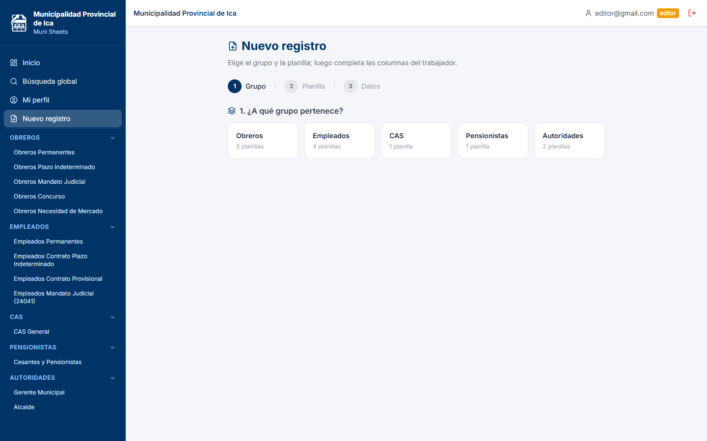
Paso 1: selección del grupo. El indicador superior muestra el avance (Grupo → Planilla → Datos).
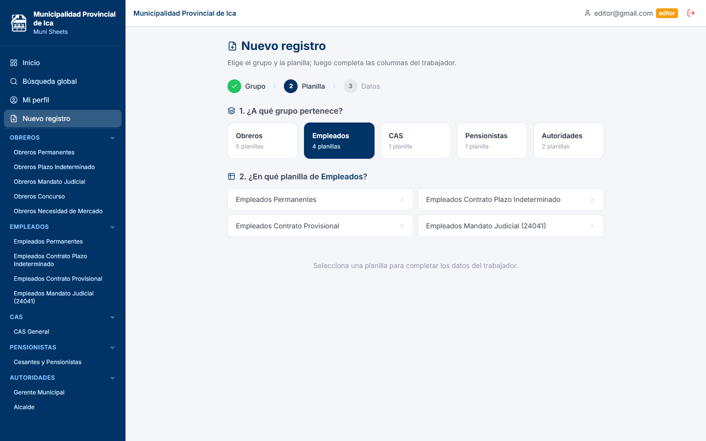
Paso 2: selección de la planilla dentro del grupo «Empleados».
Muni Sheets · MPIManual de Usuario · pág. 14
Parte B · Funciones de edición solo editor
12Nuevo registro: asistente de 3 pasos (2/2)
Paso 3 — Datos básicos del trabajador
Completa los datos de identidad, todos obligatorios:
DNI — solo números; no puede repetirse en otra planilla el mismo mes.
Apellidos y Nombres — nombre completo del trabajador.
Fecha de Ingreso — usa el calendario del campo.
S.N.P. — elige ONP o AFP; si eliges AFP aparece un segundo
selector con las 4 AFP (Integra, Prima, Profuturo, Habitat).
Área — actividad a la que pertenece el trabajador (lista desplegable;
solo aparece en las planillas divididas por áreas).
Tipo de acto administrativo — documento que sustenta el alta
(ej. Resolución de Alcaldía N° 123-2026).
Pulsa Crear. El trabajador queda registrado en el mes abierto
de esa planilla.
Paso 3: formulario de datos básicos ya completado, listo para «Crear».
¿Y los montos? El alta solo registra la identidad. Las remuneraciones y
descuentos quedan en blanco para completarlos después con Editar (sección 13) o con la
carga masiva por Excel (sección 16).
DNI duplicado: si el DNI ya existe en cualquiera de las 13 planillas en ese
mes, el sistema rechazará el alta. Es una protección para que nadie cobre dos veces.
Muni Sheets · MPIManual de Usuario · pág. 15
Parte B · Funciones de edición solo editor
13Editar un registro (totales automáticos)
Abre la planilla en su mes abierto y ubica al trabajador (usa la búsqueda si es necesario).
Pulsa Editar en su fila (o haz doble clic sobre una celda).
Se abre el formulario con todas las columnas de la planilla. Los datos de identidad
(DNI, nombres, fecha, S.N.P., área, tipo de acto) aparecen bloqueados con la marca «(fijo)» —
se corrigen con otro procedimiento (sección 14).
Completa o corrige los ingresos y descuentos. Mientras escribes, los tres totales
(T. Ingreso, T. Descuentos, T. Líquido) se recalculan solos — no los digites.
Al editar, el sistema exige llenar todos los campos no totales: escribe 0
donde no corresponda un monto.
Pulsa Actualizar para guardar. La tabla se refresca al instante.
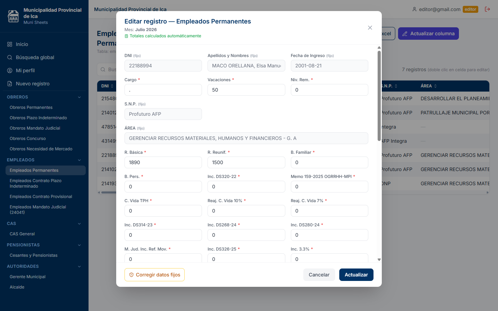
Edición de un registro: identidad bloqueada «(fijo)», montos editables, totales automáticos
y el botón «Corregir datos fijos» abajo a la izquierda.
Si dejas campos vacíos, al guardar verás el aviso «Completa todos los campos»
y el formulario seguirá abierto para que los llenes.
Muni Sheets · MPIManual de Usuario · pág. 16
Parte B · Funciones de edición solo editor
14Corregir datos fijos (identidad del trabajador)
Los datos de identidad se mantienen iguales en todos los meses del histórico. Por eso no se
editan mes a mes: se corrigen una sola vez y en todos los meses a la vez, para que el
histórico quede consistente.
Abre la edición del trabajador (sección 13).
Pulsa Corregir datos fijos (botón ámbar, abajo a la izquierda del formulario).
Se abre una ventana con los campos de identidad ahora editables:
Apellidos y Nombres, Fecha de Ingreso, S.N.P., Área (si la planilla la tiene, como lista
desplegable) y Tipo de acto administrativo. El DNI no se cambia desde aquí:
es el dato que identifica al trabajador.
Corrige lo necesario (por ejemplo, un apellido mal escrito o una fecha errada).
Confirma. El cambio se aplica a todos los meses del trabajador en esa planilla:
el histórico completo queda corregido.
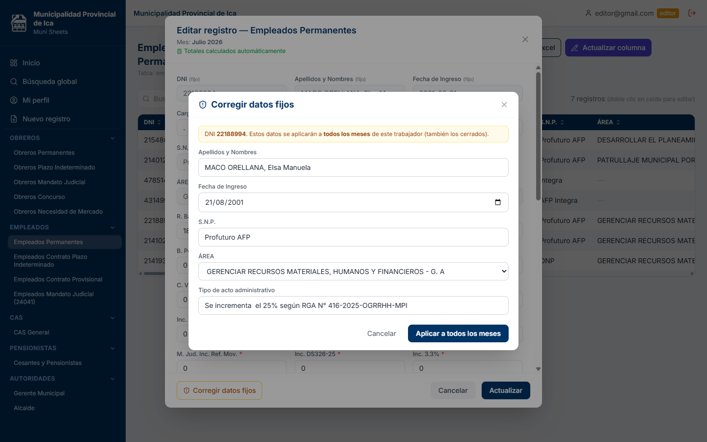
Ventana «Corregir datos fijos»: la corrección se aplica a todos los meses del trabajador.
Úsalo solo para errores reales de identidad. Si lo que necesitas es
actualizar un monto del mes, usa la edición normal (sección 13). Piensa en esta función como una
«fe de erratas» del expediente del trabajador.
Muni Sheets · MPIManual de Usuario · pág. 17
Parte B · Funciones de edición solo editor
15Eliminar un registro
Eliminar retira al trabajador de la planilla del mes abierto. Los meses anteriores
(cerrados) no se tocan: su histórico se conserva.
Abre la planilla en su mes abierto y ubica al trabajador.
Pulsa Eliminar en su fila.
Lee con atención la ventana de confirmación: indica el nombre, el DNI y el
mes del registro a eliminar.
Pulsa Confirmar solo si estás seguro, o Cancelar para desistir.
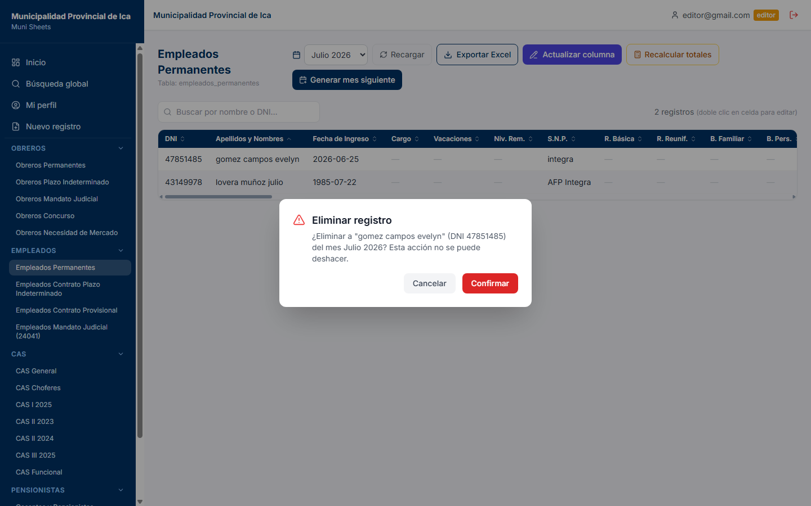
Confirmación de eliminación: verifica nombre, DNI y mes antes de confirmar.
La acción no se puede deshacer. Si eliminas por error, tendrás que volver
a crear el registro y digitar sus montos. Toda eliminación queda registrada en la auditoría del
sistema con tu usuario, fecha y hora.
¿Cesó un trabajador? No borres sus meses anteriores. Simplemente
elimínalo del mes abierto (o no lo copies al generar el mes siguiente): su historial de pagos
anteriores debe conservarse.
Muni Sheets · MPIManual de Usuario · pág. 18
Parte B · Funciones de edición solo editor
16Actualizar una columna con Excel (carga masiva)
La herramienta más poderosa del editor: aplicar de una sola vez los valores de una columna
(por ejemplo, un descuento judicial o una bonificación) a decenas de trabajadores, emparejando
por DNI. Reemplaza el antiguo copiado manual dato por dato.
Abre la planilla en su mes abierto y pulsa Actualizar columna.
En la ventana, elige la columna a actualizar (los totales automáticos no aparecen:
los calcula el sistema).
Pulsa Descargar plantilla: obtienes un Excel con el DNI y nombre de
todos los trabajadores del mes y una columna vacía para el valor.
Llena la columna de valores en Excel (deja en blanco o quita las filas que no cambien)
y guarda el archivo.
Vuelve al sistema y pulsa Subir Excel; selecciona tu archivo.
Revisa la vista previa en tres contadores:
Se actualizarán (DNIs encontrados),
DNI no encontrados (no existen en esta planilla este mes) e
DNI inválidos (celdas con error). Debajo verás la lista
detallada de los registros a actualizar.
Si todo está conforme pulsa Confirmar (N). El sistema aplica los N
valores de un solo golpe y muestra el resultado.
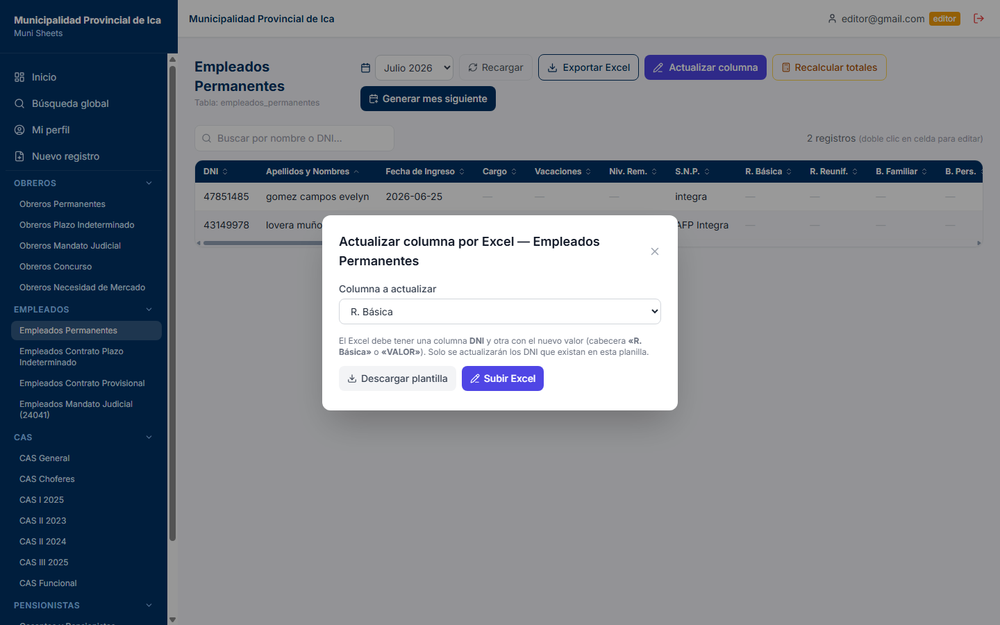
Ventana «Actualizar columna por Excel» con la columna «R. Básica» elegida:
plantilla descargable y carga del archivo.
Formato flexible: tu Excel solo necesita una columna DNI y otra con
el valor (acepta como cabecera el nombre de la columna o simplemente «VALOR»). Los DNI repetidos
en el archivo se toman una sola vez.
Muni Sheets · MPIManual de Usuario · pág. 19
Parte B · Funciones de edición solo editor
17Recalcular totales
Los totales de cada trabajador (T. Ingreso = suma de ingresos, T. Descuentos =
suma de descuentos, T. Líquido = ingresos − descuentos) los calcula automáticamente el
sistema cada vez que guardas un registro. El botón Recalcular totales fuerza
ese cálculo para todos los registros del mes a la vez.
Cuándo usarlo
Después de una o varias cargas masivas por Excel (sección 16), para asegurar que
los tres totales reflejen los nuevos valores.
Si observas un total que no cuadra con las columnas visibles (por ejemplo, tras una
corrección de datos).
Cómo usarlo
Abre la planilla en su mes abierto.
Pulsa Recalcular totales (botón ámbar de la barra).
Espera unos segundos: el aviso confirmará cuántos registros fueron recalculados y la
tabla se refresca sola.
Es seguro: recalcular no altera los montos que digitaste — solo
vuelve a sumar y restar. Puedes usarlo cuantas veces necesites.
Alertas de la tabla: si una fila muestra un indicador de alerta
(líquido negativo o total descuadrado), recalcular suele ser el primer paso para normalizarla;
si persiste, revisa los montos de esa fila con Editar.
Muni Sheets · MPIManual de Usuario · pág. 20
Parte B · Funciones de edición solo editor
18Generar el mes siguiente
Al cerrar un ciclo de pago, el editor crea la planilla del mes próximo. El sistema copia la
identidad de todos los trabajadores (DNI, nombres, fecha de ingreso, S.N.P., área, tipo
de acto) y deja los montos en blanco para el nuevo ciclo.
Abre la planilla en su mes abierto (el más reciente).
Pulsa Generar mes siguiente (botón azul de la barra).
Lee la ventana de confirmación: indica qué mes se creará, desde qué mes se copiarán los
trabajadores y que el mes actual quedará como histórico de solo lectura.
Pulsa Confirmar. El sistema crea el nuevo mes y te posiciona en él.
Completa los montos del nuevo mes: por Excel masivo (sección 16) para las columnas
repetitivas y con Editar (sección 13) para los casos individuales.
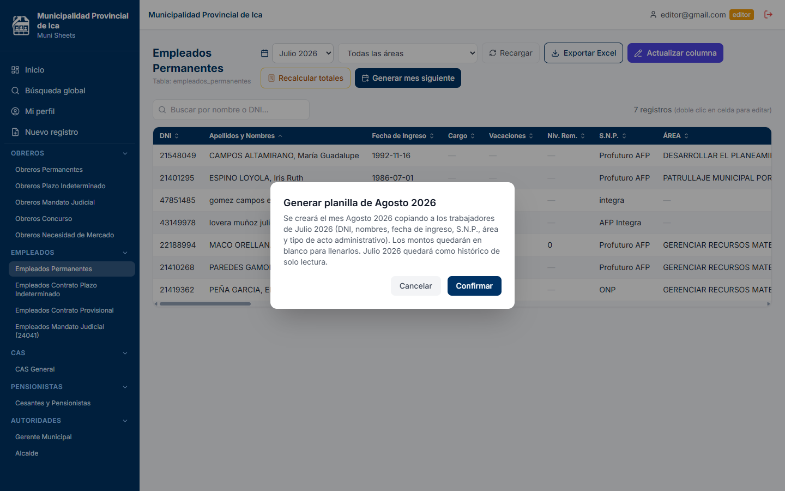
Confirmación de «Generar mes siguiente»: Agosto 2026 se creará copiando la identidad
de los trabajadores de Julio 2026.
Hazlo una sola vez por mes y por planilla. El sistema solo permite
generar el mes inmediatamente siguiente al último existente (no se pueden saltar meses).
Tras generar el nuevo mes, el anterior queda cerrado (solo lectura). Si un trabajador ya no
continúa, elimínalo del nuevo mes (sección 15); si ingresó uno nuevo, créalo con el asistente
(sección 12).
Muni Sheets · MPIManual de Usuario · pág. 21
Cierre
19Límites de cada rol y preguntas frecuentes
Lo que tu rol NO puede hacer
Rol
Fuera de su alcance
Consultor
Crear, editar o eliminar registros; cargas masivas por Excel; recalcular;
generar meses; gestionar usuarios; ver auditoría. Su menú no muestra «Nuevo registro» y las
planillas no le muestran botones de edición.
Editor
Gestionar usuarios (crear cuentas, cambiar roles o contraseñas de otros) y
ver la auditoría de cambios — ambas exclusivas del administrador. Tampoco puede modificar
meses cerrados.
Preguntas frecuentes
Pregunta
Respuesta
No veo los botones de edición y soy editor.
Verifica el mes seleccionado: en meses cerrados (aviso ámbar) la planilla es de
solo lectura para todos. Vuelve al mes más reciente.
Subí mi Excel y salieron «DNI no encontrados».
Esos DNI no existen en esa planilla y ese mes. Verifica que sea la planilla
correcta y que el trabajador esté registrado en el mes abierto.
¿Puedo deshacer una eliminación?
No. Deberás crear el registro de nuevo. Toda eliminación queda registrada en la
auditoría del administrador.
El total líquido de una fila sale negativo.
La tabla lo marca como alerta: los descuentos superan los ingresos. Revisa los montos
de esa fila con Editar y usa Recalcular totales.
¿Los cambios de otros usuarios se ven al instante?
Sí. La planilla se actualiza en tiempo real; también puedes pulsar «Recargar».
Olvidé mi contraseña.
Usa el enlace «¿Olvidaste tu contraseña?» de la pantalla de acceso y recibirás
un correo para crear una nueva (sección 2). Si el correo no llega, el administrador puede
asignarte una desde Usuarios.
Necesito un rol distinto o una cuenta nueva.
Solicítalo al administrador del sistema — es el único que gestiona cuentas y roles.
Soporte: ante cualquier situación no cubierta por este
manual, contacta al administrador del sistema en la Gerencia de Administración.
Muni Sheets · MPIManual de Usuario · pág. 22 · fin del documento